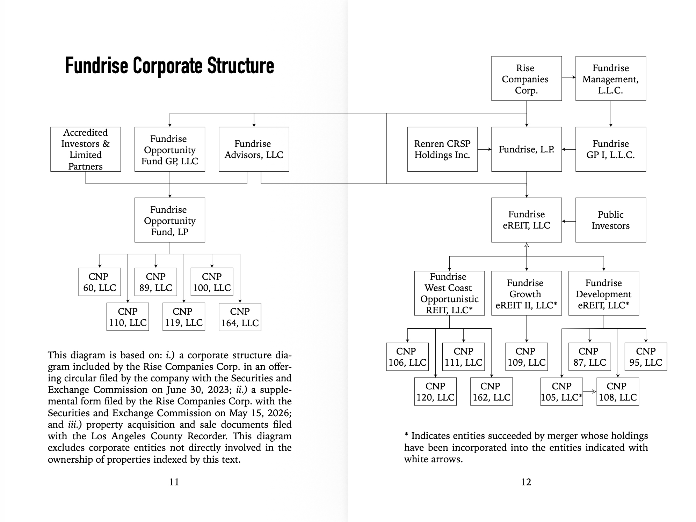
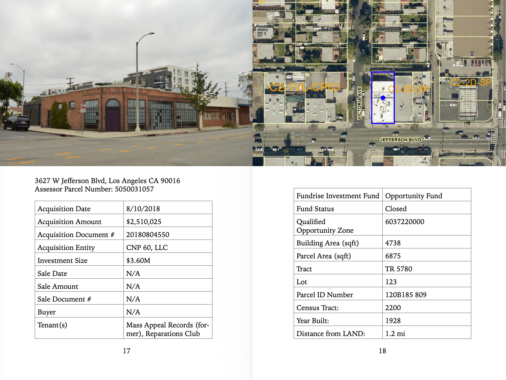

Qualified Opportunity: Fundrise Commercial Investments in West Adams, Los Angeles (2017-2026)
2026.
Artists book, 175 pages. Edition of 100.
Published by Los Angeles Nomadic Division in Los Angeles, California August 2026 Printed by Outlandish Press in Cleveland, Ohio.
Photo: Christopher Magnum-James

QUALIFIED OPPORTUNITY (with Hunter Baoengstrum)
Walkling tour, 4 miles. 2026.
Photo: Star Montana
City of Los Angeles Bureau of Infrastructure Inspections
Inspection 65-09272026
DATE: Sunday, September 27, 2026
TIME: Meet 9:00 AM, Walk 9:30 AM
START AND END LOCATION: Blue Elephant Cafe (2024 W Washington Blvd)
"The Me Decade" Never Ended
Lecture by Masha Hupalo. Delivered on Saturday, October 24, 2026 at 3716 West Jefferson Blvd, Los Angeles, CA 90016.
Photo: Star Montana
Today’s dynamic environment of real estate profit capture in Los Angeles was long in the making, but some of its most important foundations were laid in the 1970s, “the Me Decade,” linked to the rights revolution, Watergate, and oil shortages.
More obscure in public memory are Richard Nixon’s suspension of all federal housing subsidy programs and announcement that foreign-held U.S. dollars would no longer be convertible to gold, turning them into fiat money with no intrinsic value. Locally, Californians started a tax revolt, and Los Angeles moved toward anti-growth policies to preserve the residential character of the city and property prices.
For this lecture, Hupalo draws attention to the different scales, situations, and moods of the commonly perceived pessimistic seventies, and to how they brought us to the speculative present of housing.